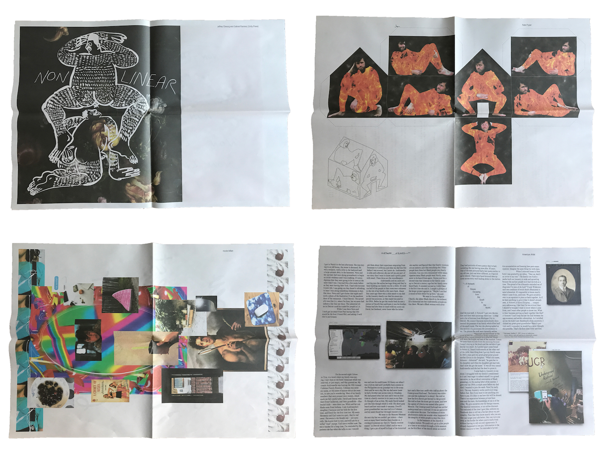
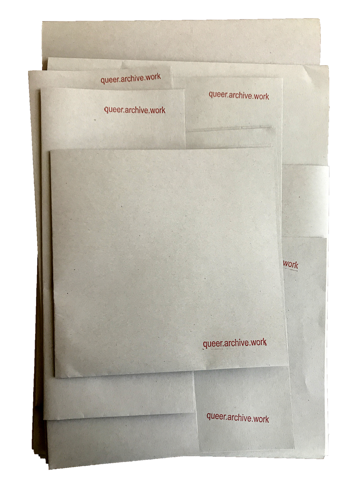
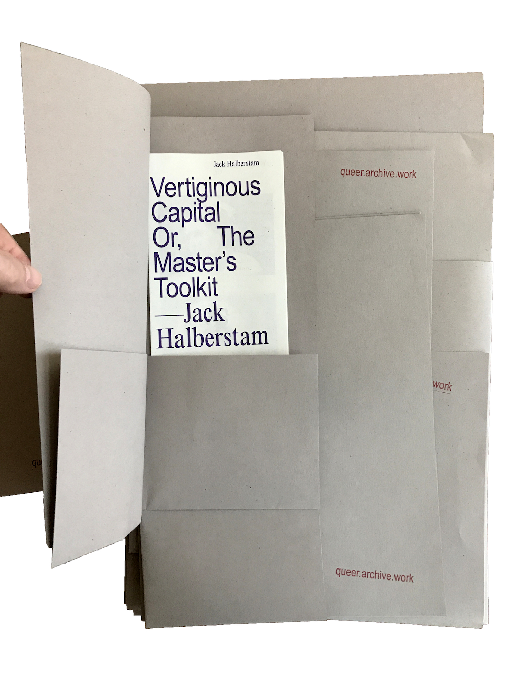
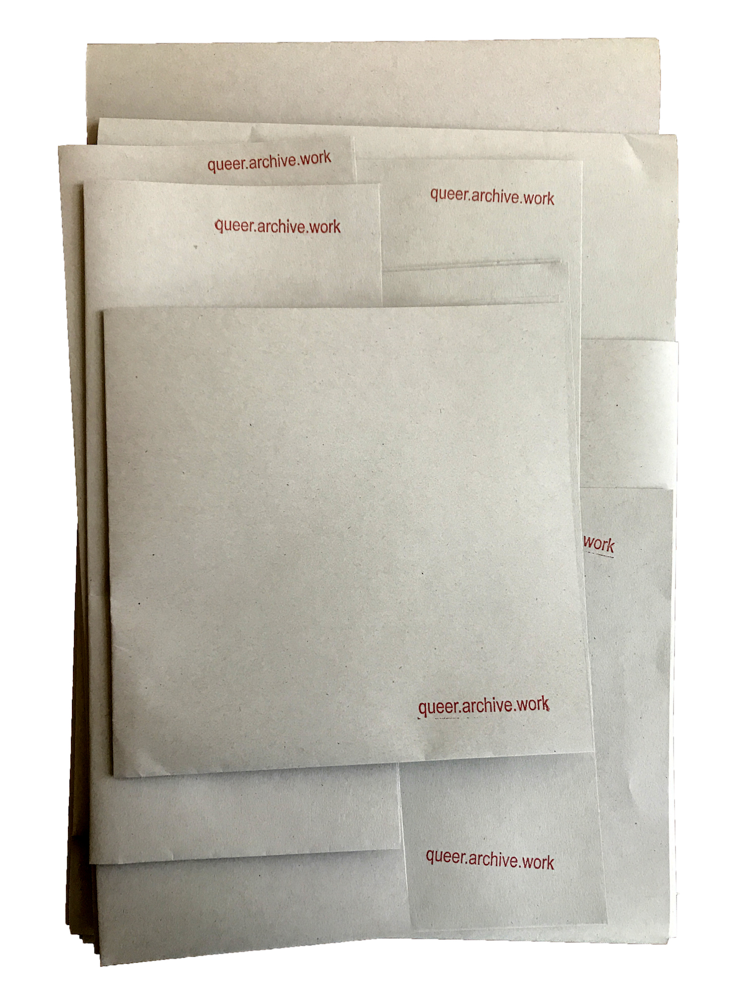
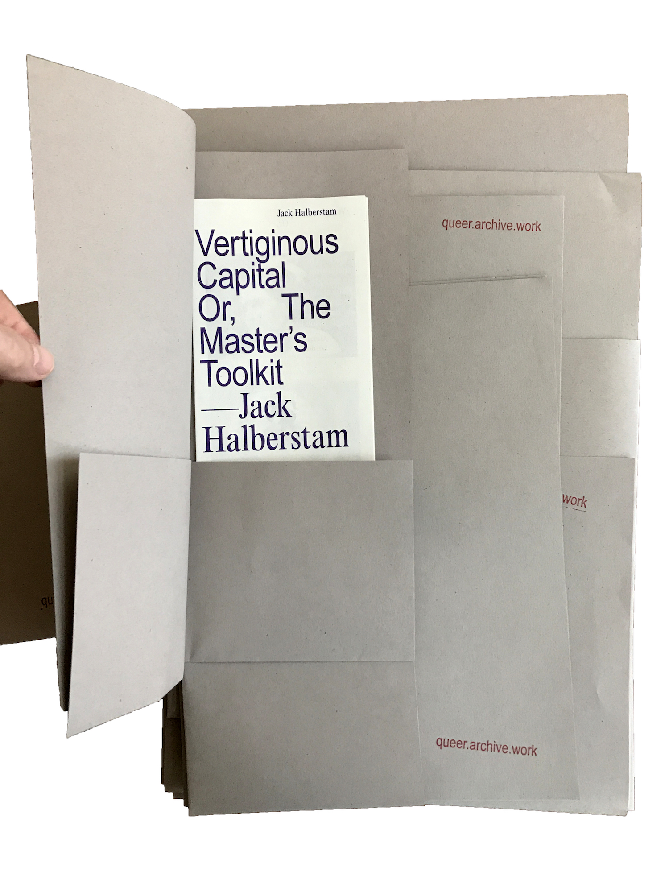

QUEER.ARCHIVE.WORK / 1 (2018)

Top: Unity, Nate Pyper / Bottom: nicole killian, American Artist
Below: Nora N. Khan

Contents—
American Artist—A nETwoRK ___of SLAVES~~~***
Somnath Bhatt—..... a thick opening
Jeffrey Cheung and Gabriel Ramirez (Unity Press)
Demian DinéYazhi´—AN INFECTED SUNSET
Jack Halberstam—Vertiginous Capital Or, The Master’s Toolkit
shawné michaelain holloway—_.DEVICEPLAY(trust and touch, care and reflection, [a study of denial])
Nora N. Khan—The Possibility of a Field
nicole killian—A SCENE AT THE SEA BUS STOP SONG
Be Oakley (GenderFail)
Allison Parrish—The Wcnsske-Gonshanshcoma Reconstructions
Porpentine Charity Heartscape—Living Fucking Creatures
Nate Pyper—in this house we self-immolate
Sal Randolph—Sappho’s Text

Jack Halberstam
ISSUE #1 is a loose assemblage: a 36-page print-on-demand broadsheet newspaper surrounded by separate risograph-printed pieces—
—a 20-page zine
—a 12-page zine
—an 8-page zine
—two double-sided posters
—a small print
—a fold-out sheet (v1.1)
—a title sheet
—a URL title card
Download digital edition (38.5MB ZIP)
p2p at dat://queer.hashbase.io

Somnath Bhatt
Nothing in issue #1 is bound. No staples or glue. The nine parts of the publication use folding, nesting, and enveloping as techniques of association. Sheets may be pulled out and rearranged, encouraging new juxtapositions and relationships each time it’s read.


Print edition of 300 launched at 2018 NY Art Book Fair and 2018 Boston Art Book Fair. Version 1.1 (edition of 60) featured at NY Tech Zine Fair, December 2018.
“Publishing as practice as resistance,” a talk presented at the Boston Art Book Fair on October 13, 2018.

Porpentine Charity Heartscape
Demolition Man
—a 20-page zine
—a 12-page zine
—an 8-page zine
—two double-sided posters
—a small print
—a fold-out sheet (v1.1)
—a title sheet
—a URL title card
Download digital edition (38.5MB ZIP)
p2p at dat://queer.hashbase.io
Somnath Bhatt
Nothing in issue #1 is bound. No staples or glue. The nine parts of the publication use folding, nesting, and enveloping as techniques of association. Sheets may be pulled out and rearranged, encouraging new juxtapositions and relationships each time it’s read.


Print edition of 300 launched at 2018 NY Art Book Fair and 2018 Boston Art Book Fair. Version 1.1 (edition of 60) featured at NY Tech Zine Fair, December 2018.
“Publishing as practice as resistance,” a talk presented at the Boston Art Book Fair on October 13, 2018.